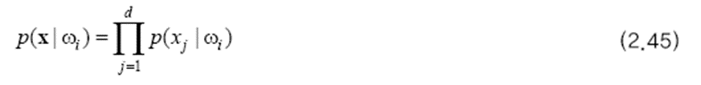
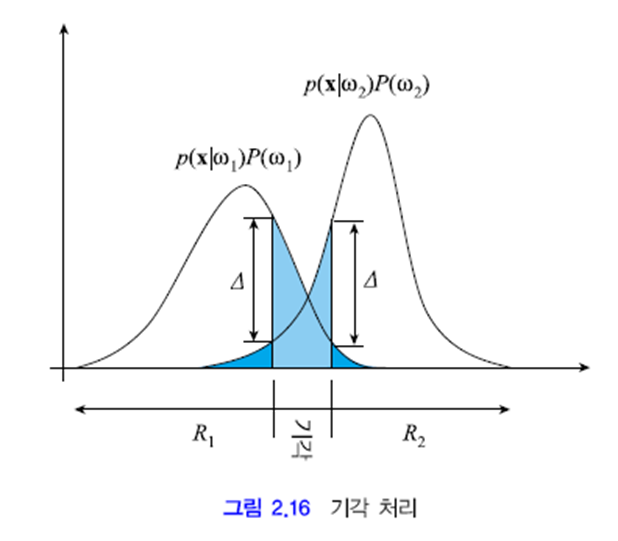

이전 글을 못 보신 분들께 추천 드립니다.
2023.01.11 - [딥러닝/기초 공부] - [확률/통계] 2-1. 베이지안 결정 이론 + ppt, 연습문제 (패턴인식 - 오일석)
2023.01.13 - [딥러닝/기초 공부] - [확률/통계] 2-2. 베이지안 결정 이론 + ppt, 연습문제 (패턴인식 - 오일석)
2023.01.13 - [딥러닝/기초 공부] - [확률/통계] 2-3. 베이지안 결정 이론 + ppt, 연습문제 (패턴인식 - 오일석)
2023.01.16 - [딥러닝/기초 공부] - [확률/통계] 2-4. 베이지안 결정 이론 + ppt, 연습문제 (패턴인식 - 오일석)
[확률/통계] 2-4. 베이지안 결정 이론 + ppt, 연습문제 (패턴인식 - 오일석)이전 글을 보고 오시지 않은 분들께 추천드립니다. 2023.01.11 - [딥러닝/기초 공부] - [확률/통계] 2. 베이지안 결정 이론 1 + ppt, 연습문제 (패턴인식 - 오일석) 2023.01.13 - [딥러닝/기초 공부] - [확률/통imkmsh.tistory.com
2.5 베이지안 분류의 특성
베이지안 분류의 특성
지금까지 공부한 베이지안 분류기는 4장의 신경망이나 5장의 SVM과 다른 몇 가지 특성을 갖고 있습니다.
1. 비현실성을 내포하고 있습니다. 일반적인 확률 분포를 사용하려 하면 차원의 저주가 발생합니다. 정규 분포를 가정하면 실제 확류 분포와 차이가 발생합니다.
2. 1의 비현실성을 무시하고 실제 확률 분포를 안다고 가정하면 베이지안 분류기는 오류율 측면에서 최적입니다. 이 최적성을 수학적으로 완벽하게 증명할 수 있습니다.
3. 베이지안 분류기는 M개 부류 각각에 대해 그에 속할 확률을 출력합니다. 즉 분류기의 gi(x)를 확률로 해석할 수 있습니다. 따라서 이 확률을 신뢰도 값으로 삼아 유용하게 활용할 수 있습니다.
나이브 베이지안 분류기
베이지안 분류기를 만들기 위해서는 사전 확률과 우도를 추정해야 합니다. 이 과정에서 차원의 저주가 발생하는데, 특징들이 모두 독립이라는 가정을 하고 차원의 저주를 피하는 방법이 있습니다. 이 때는 아래와 같이 우도를 쓸 수 있습니다.

각각의 특징이 다른 특징과 무관하게 우도를 추정하여 1차원 배열에 저장할 수 있는 것입니다. 그들을 모두 곱하면 구하고자 하는 우도가 됩니다. 이 분류기를 나이브 베이지안 분류기라고 합니다.
차원의 저주를 피할 수는 있지만 실제 세계는 모든 특징이 독립적이지 않습니다. 따라서 성능은 떨어집니다.
2.6 기각 처리
기각
지금까지는 x를 가장 큰 사후 확률을 갖는 부류로 분류하는 전략을 사용하였습니다. 하지만 이런 방식이 적절하지 않은 상황이 있습니다. 분류가 애매한 경우는 분류를 보류하고 사람이 의사 결정하도록 미루는 것이 좋습니다.
아래 그램은 최소 오류 베이지안 분류기에 기각 처리를 추가한 그림입니다. 두 부류의 확률 값 차이가 ∇ 이내인 영역은 기각으로 처리합니다. 그렇다면 오류 확률이 크게 줄게 됩니다. 짙은 파란색 영역의 면적 만 오류율이 됩니다. 연한 파란색 영역의 면적이 기각률입니다.
